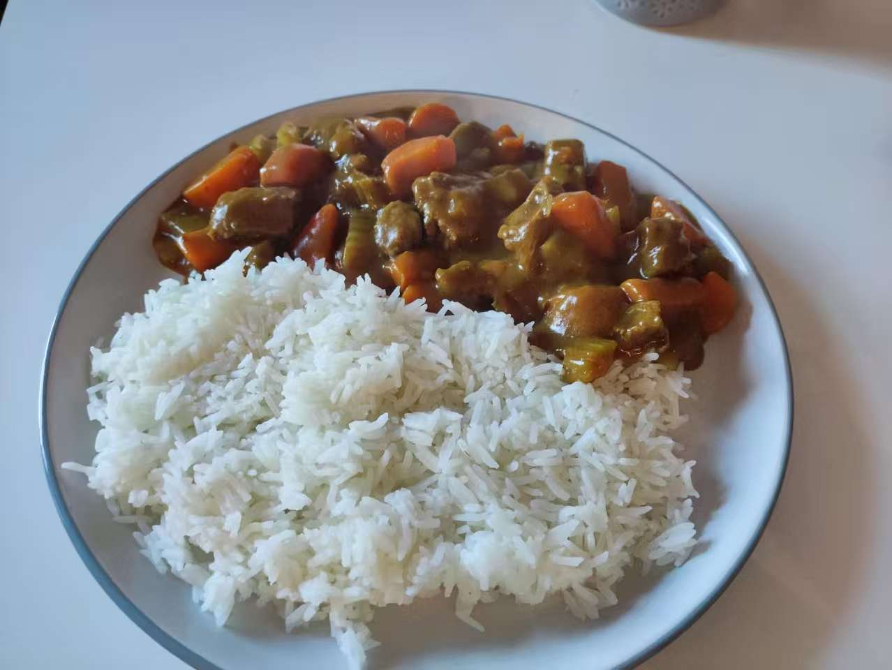

Interested in Asain food but don't know how to cook? Well, you've come to the right place! Here are some recipes you can follow:

Take them and go cook at home. No need to say thank you. While Joey doesn't share food, I do share recipes!